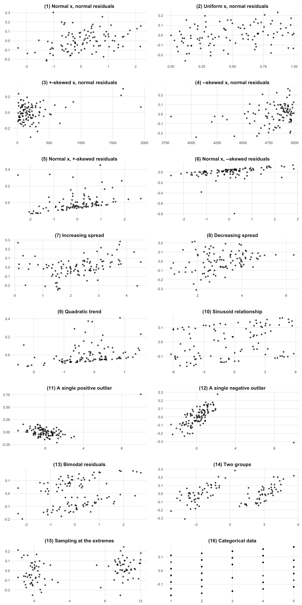
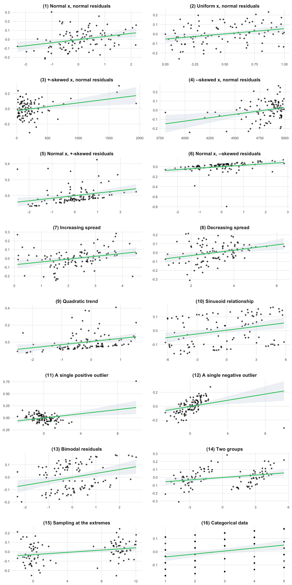
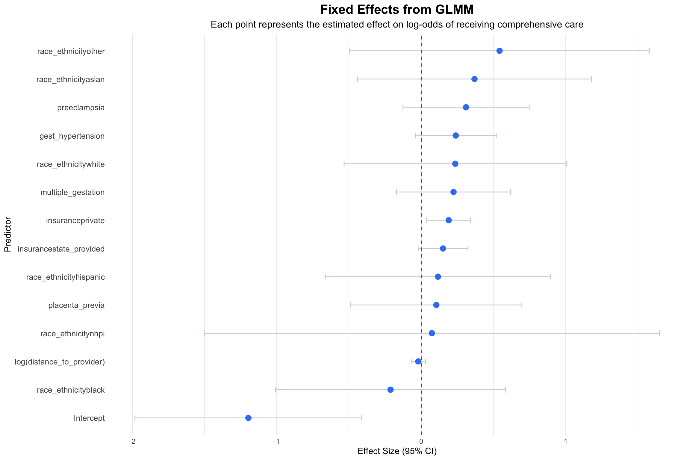
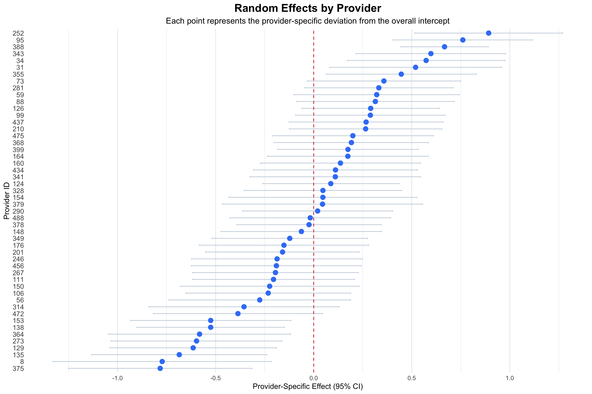
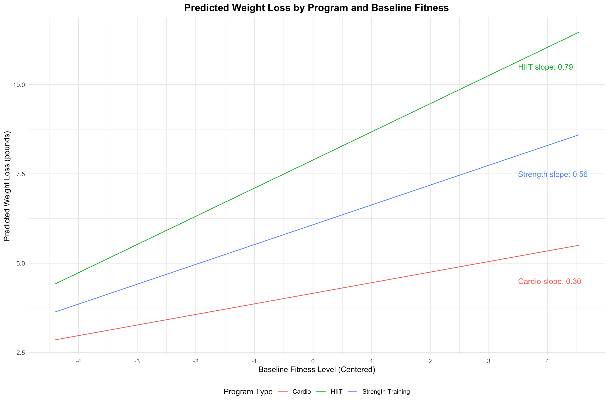
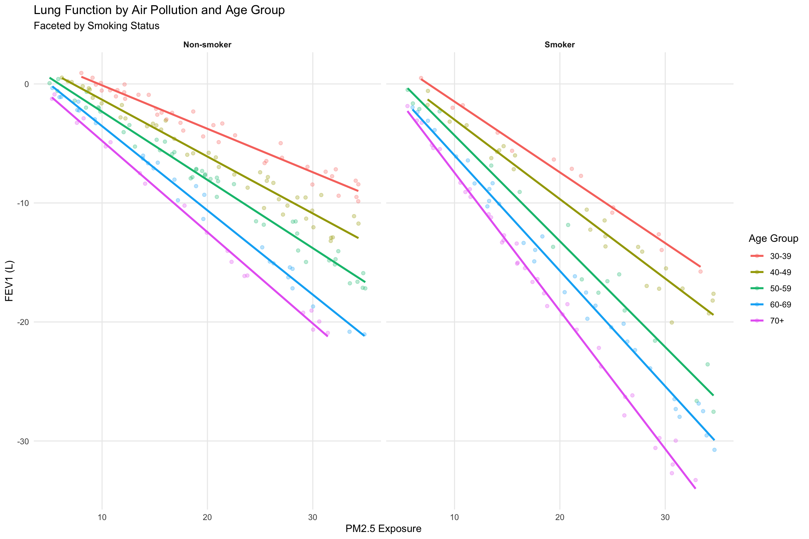

# List of required packages
required_packages <- c(
"dplyr",
"ggplot2",
"broom.mixed",
"kableExtra",
"lme4",
"readr",
"emmeans"
)
# Install missing packages
new_packages <- required_packages[!(required_packages %in% installed.packages()[,"Package"])]
if(length(new_packages)) install.packages(new_packages)
# Load all packages
for (package in required_packages) {
library(package, character.only = TRUE)
}
source(here::here("examples", "colors.R"))
set.seed(123)Application 6: Visualizing Correlations and Models
Looking At Data: Correlations
Correlations are indisposable for understanding the relationship between two variables, but they can be misleading as we show below.
This is adapted directly from Jan Vanhove.
plot_r <- function(df, showSmoother = TRUE, smoother = "lm") {
p <- ggplot(df, aes(x = x, y = y)) +
geom_point(alpha = 0.7)
if(showSmoother) {
p <- p +
geom_smooth(
formula = y ~ x,
method = smoother,
color = colors$green$`500`,
fill = colors$slate$`300`,
alpha = 0.3,
)
}
p <- p +
facet_wrap(~title, scales = "free", ncol = 2) +
theme_minimal(base_size = 12) +
theme(
strip.text = element_text(face = "bold", size = 14),
axis.title = element_blank(),
plot.title = element_text(size = 24, face = "bold", hjust = 0.5),
panel.grid.minor = element_blank(),
axis.text = element_text(size = 10),
panel.spacing = unit(2, "lines")
)
p
}
corr_r <- function(r = 0.6, n = 50) {
compute.y <- function(x, y, r) {
theta <- acos(r)
X <- cbind(x, y)
Xctr <- scale(X, center = TRUE, scale = FALSE) # Centered variables (mean 0)
Id <- diag(n) # Identity matrix
Q <- qr.Q(qr(Xctr[, 1, drop = FALSE])) # QR decomposition
P <- tcrossprod(Q) # Projection onto space defined by x1
x2o <- (Id - P) %*% Xctr[, 2] # x2ctr made orthogonal to x1ctr
Xc2 <- cbind(Xctr[, 1], x2o)
Y <- Xc2 %*% diag(1 / sqrt(colSums(Xc2 ^ 2)))
y <- Y[, 2] + (1 / tan(theta)) * Y[, 1]
return(y)
}
cases <- list(
list(id = 1, title = "(1) Normal x, normal residuals", x = rnorm(n), y = rnorm(n)),
list(id = 2, title = "(2) Uniform x, normal residuals", x = runif(n, 0, 1), y = rnorm(n)),
list(id = 3, title = "(3) +-skewed x, normal residuals", x = rlnorm(n, 5), y = rnorm(n)),
list(id = 4, title = "(4) --skewed x, normal residuals", x = rlnorm(n, 5) * -1 + 5000, y = rnorm(n)),
list(id = 5, title = "(5) Normal x, +-skewed residuals", x = rnorm(n), y = rlnorm(n, 5)),
list(id = 6, title = "(6) Normal x, --skewed residuals", x = rnorm(n), y = -rlnorm(n, 5)),
list(id = 7, title = "(7) Increasing spread",
x = sort(rnorm(n)) + abs(min(rnorm(n))),
y = rnorm(n, 0, sqrt(abs(10 * sort(rnorm(n)))))),
list(id = 8, title = "(8) Decreasing spread",
x = sort(rnorm(n)) + abs(min(rnorm(n))),
y = rnorm(n, 0, sqrt(pmax(0.1, abs(10 * max(sort(rnorm(n))) - 10 * sort(rnorm(n))))))),
list(id = 9, title = "(9) Quadratic trend", x = rnorm(n), y = rnorm(n) ^ 2),
list(id = 10, title = "(10) Sinusoid relationship", x = runif(n, -2 * pi, 2 * pi), y = sin(runif(n, -2 * pi, 2 * pi))),
list(id = 11, title = "(11) A single positive outlier", x = c(rnorm(n - 1), 10), y = c(rnorm(n - 1), 15)),
list(id = 12, title = "(12) A single negative outlier", x = c(rnorm(n - 1), 10), y = c(rnorm(n - 1), -15)),
list(id = 13, title = "(13) Bimodal residuals", x = rnorm(n), y = c(rnorm(floor(n / 2), mean = -3), rnorm(ceiling(n / 2), 3))),
list(id = 14, title = "(14) Two groups",
x = c(rnorm(floor(n / 2), -3), rnorm(ceiling(n / 2), 3)),
y = c(rnorm(floor(n / 2), mean = 3), rnorm(ceiling(n / 2), mean = -3))),
list(id = 15, title = "(15) Sampling at the extremes",
x = c(rnorm(floor(n / 2)), rnorm(ceiling(n / 2), mean = 10)),
y = rnorm(n)),
list(id = 16, title = "(16) Categorical data",
x = sample(1:5, n, replace = TRUE),
y = sample(1:7, n, replace = TRUE))
)
df <- bind_rows(lapply(cases, function(case) {
id = case$id
x <- case$x
y <- compute.y(x, case$y, r)
data.frame(id = id, x = x, y = y, title = case$title)
}))
df$title <- factor(df$title, levels = paste0("(", 1:16, ") ", c(
"Normal x, normal residuals",
"Uniform x, normal residuals",
"+-skewed x, normal residuals",
"--skewed x, normal residuals",
"Normal x, +-skewed residuals",
"Normal x, --skewed residuals",
"Increasing spread",
"Decreasing spread",
"Quadratic trend",
"Sinusoid relationship",
"A single positive outlier",
"A single negative outlier",
"Bimodal residuals",
"Two groups",
"Sampling at the extremes",
"Categorical data"
)))
return(df)
}
data <- corr_r(r=0.3, n=100)
analysis_data <- data |> filter(id == 1)
model <- lm(y ~ x, data = analysis_data)
summary(model)
Call:
lm(formula = y ~ x, data = analysis_data)
Residuals:
Min 1Q Median 3Q Max
-0.19848 -0.07113 -0.00910 0.06042 0.34241
Coefficients:
Estimate Std. Error t value Pr(>|t|)
(Intercept) -0.00313 0.01015 -0.308 0.75846
x 0.03463 0.01112 3.113 0.00243 **
---
Signif. codes: 0 '***' 0.001 '**' 0.01 '*' 0.05 '.' 0.1 ' ' 1
Residual standard error: 0.101 on 98 degrees of freedom
Multiple R-squared: 0.09, Adjusted R-squared: 0.08071
F-statistic: 9.692 on 1 and 98 DF, p-value: 0.002426cor(analysis_data$x, analysis_data$y)[1] 0.3plot_r(data, showSmoother=FALSE)
plot_r(data, showSmoother=TRUE)
Visualizing Model Outputs
Visualization of model outputs is often neglected, but it can be a powerful way both to undrestand and to communicate the results of a model. A number of packages exist to help with this, including broom.mixed, emmeans, and ggeffects.
Here, we fit a logistic mixed-effects model using the glmer() function to estimate the odds of receiving comprehensive postnatal care. This model accounts for both fixed effects (individual-level predictors like race or insurance status) and a random intercept for provider, which captures unobserved heterogeneity across providers.
# Load data
data <- read_csv(here::here("data", "processed", "simulated_data.csv"))Rows: 50000 Columns: 20
── Column specification ────────────────────────────────────────────────────────
Delimiter: ","
chr (6): state, self_report_income, edu, race_ethnicity, insurance, job_type
dbl (14): id, provider_id, received_comprehensive_postnatal_care, age, depen...
ℹ Use `spec()` to retrieve the full column specification for this data.
ℹ Specify the column types or set `show_col_types = FALSE` to quiet this message.# Sample 1/4 of the sites
set.seed(123)
unique_sites <- unique(data$provider_id)
reduced_sites <- sample(unique_sites, length(unique_sites) * 0.10)
data <- data[data$provider_id %in% reduced_sites, ]
# Fit the model
model <- glmer(
received_comprehensive_postnatal_care ~
race_ethnicity +
log(distance_to_provider) +
insurance +
multiple_gestation +
placenta_previa +
gest_hypertension +
preeclampsia +
(1 | provider_id),
data = data,
family = binomial(link = "logit"),
control = glmerControl(optimizer = "bobyqa", optCtrl = list(maxfun = 1e5))
)
# Create variable labels for better visualization
variable_labels <- c(
"race_ethnicityaian" = "AIAN",
"race_ethnicityasian" = "Asian",
"race_ethnicityblack" = "Black",
"race_ethnicityhispanic" = "Hispanic",
"race_ethnicitynhpi" = "NHPI",
"race_ethnicityother" = "Other",
"log(distance_to_provider)" = "Log(Distance to Provider)",
"insuranceprivate" = "Insurance: Private",
"insurancestate_provided" = "Insurance: State-Provided",
"multiple_gestation" = "Multiple Gestation",
"placenta_previa" = "Placenta Previa",
"gest_hypertension" = "Gestational Hypertension",
"preeclampsia" = "Preeclampsia",
"(Intercept)" = "Intercept"
)Below, we extract the fixed-effect estimates using broom.mixed::tidy(), including 95% confidence intervals, and plot them as a coefficient plot (a forest plot for regression coefficients).
Each point shows the estimated log-odds of receiving comprehensive care associated with a given covariate, holding other variables constant. The dashed vertical line at 0 represents no effect.
# Get fixed effects with confidence intervals
fixed_effects <- tidy(model, conf.int = TRUE) |>
filter(effect == "fixed") |>
# Remove any NA values
filter(!is.na(estimate)) |>
# Create a more readable term name
mutate(term = case_when(
term == "(Intercept)" ~ "Intercept",
term == "age" ~ "Age",
term == "sexMale" ~ "Male Sex",
term == "raceBlack" ~ "Black Race",
term == "raceHispanic" ~ "Hispanic Race",
term == "raceOther" ~ "Other Race",
term == "insurancePrivate" ~ "Private Insurance",
term == "insuranceMedicaid" ~ "Medicaid",
term == "insuranceOther" ~ "Other Insurance",
term == "comorbidity_score" ~ "Comorbidity Score",
term == "emergency_admissionTRUE" ~ "Emergency Admission",
term == "weekend_admissionTRUE" ~ "Weekend Admission",
term == "night_admissionTRUE" ~ "Night Admission",
TRUE ~ term
))
# Create the forest plot
ggplot(fixed_effects, aes(x = estimate, y = reorder(term, estimate))) +
geom_errorbarh(aes(xmin = conf.low, xmax = conf.high),
height = 0.2, color = colors$slate$`300`) +
geom_point(size = 3, color = colors$blue$`500`) +
geom_vline(xintercept = 0, linetype = "dashed", color = colors$red$`600`) +
labs(
title = "Fixed Effects from GLMM",
subtitle = "Each point represents the estimated effect on log-odds of receiving comprehensive care",
x = "Effect Size (95% CI)",
y = "Predictor"
) +
theme_minimal() +
theme(
panel.grid.major.y = element_blank(),
plot.title = element_text(hjust = 0.5, size = 16, face = "bold"),
plot.subtitle = element_text(hjust = 0.5, size = 12),
axis.text.y = element_text(size = 10)
)
Predicted Probabilities by Covariate Groups
Here, we use the emmeans package to estimate marginal predicted probabilities for selected covariates. These represent the expected probability of receiving comprehensive care for each level of a covariate, averaging over the distribution of other covariates in the model. This approach helps isolate the relationship between each covariate and the outcome while controlling for confounding. We visualize these estimates and their 95% confidence intervals, grouped by domain (e.g., race/ethnicity, insurance, medical conditions).
# Calculate predicted probabilities for each covariate group
library(emmeans)
# Race/Ethnicity
race_probs <- emmeans(model, ~ race_ethnicity, type = "response")
race_probs_df <- as.data.frame(race_probs) |>
mutate(
group = "Race/Ethnicity",
category = case_when(
race_ethnicity == "aian" ~ "AIAN",
race_ethnicity == "asian" ~ "Asian",
race_ethnicity == "black" ~ "Black",
race_ethnicity == "hispanic" ~ "Hispanic",
race_ethnicity == "nhpi" ~ "NHPI",
race_ethnicity == "other" ~ "Other",
race_ethnicity == "white" ~ "White"
)
)
# Insurance
insurance_probs <- emmeans(model, ~ insurance, type = "response")
insurance_probs_df <- as.data.frame(insurance_probs) |>
mutate(
group = "Insurance",
category = case_when(
insurance == "medicaid" ~ "Medicaid",
insurance == "private" ~ "Private",
insurance == "state_provided" ~ "State-Provided",
insurance == "uninsured" ~ "Uninsured",
TRUE ~ "Other"
)
)
# Medical Conditions
conditions_probs <- emmeans(model, ~ multiple_gestation + placenta_previa + gest_hypertension + preeclampsia, type = "response")
conditions_probs_df <- as.data.frame(conditions_probs) |>
mutate(
group = "Medical Conditions",
category = case_when(
multiple_gestation == 1 ~ "Multiple Gestation",
placenta_previa == 1 ~ "Placenta Previa",
gest_hypertension == 1 ~ "Gestational Hypertension",
preeclampsia == 1 ~ "Preeclampsia",
TRUE ~ "No Medical Conditions"
)
) |>
# Remove duplicates where multiple conditions are true
distinct(category, .keep_all = TRUE)
# Combine all predictions
all_probs <- bind_rows(
race_probs_df |> select(group, category, prob, asymp.LCL, asymp.UCL),
insurance_probs_df |> select(group, category, prob, asymp.LCL, asymp.UCL),
conditions_probs_df |> select(group, category, prob, asymp.LCL, asymp.UCL)
)
# Create faceted plot
ggplot(all_probs, aes(x = prob, y = reorder(category, prob))) +
geom_errorbarh(aes(xmin = asymp.LCL, xmax = asymp.UCL),
height = 0.2, color = colors$slate$`300`) +
geom_point(size = 3, color = colors$blue$`500`) +
facet_wrap(~ group, scales = "free_y", ncol = 1) +
labs(
title = "Predicted Probability of Receiving Comprehensive Care",
subtitle = "By Covariate Groups",
x = "Predicted Probability (95% CI)",
y = "Category"
) +
scale_x_continuous(labels = scales::percent) +
theme_minimal() +
theme(
panel.grid.major.y = element_blank(),
plot.title = element_text(hjust = 0.5, size = 16, face = "bold"),
plot.subtitle = element_text(hjust = 0.5, size = 12),
axis.text.y = element_text(size = 10),
strip.text = element_text(size = 12, face = "bold")
)
Provider-Level Random Effects
We visualize the provider-level random intercepts, which represent the estimated deviation of each provider from the overall mean (intercept) after accounting for the fixed effects in the model. This helps reveal between-provider variability and can identify providers whose outcomes are systematically higher or lower than expected. The dashed vertical line at zero indicates the overall average; providers to the right have higher-than-average effects, and those to the left are lower.
# Get random effects
random_effects <- ranef(model, condVar = TRUE)
random_effects_data <- as.data.frame(random_effects)
# Create the forest plot of random effects
ggplot(random_effects_data, aes(x = condval, y = reorder(grp, condval))) +
geom_errorbarh(aes(xmin = condval - 1.96*sqrt(attr(random_effects$provider_id, "postVar")[1,1,]),
xmax = condval + 1.96*sqrt(attr(random_effects$provider_id, "postVar")[1,1,])),
height = 0.2, color = colors$slate$`300`) +
geom_point(size = 3, color = colors$blue$`500`) +
geom_vline(xintercept = 0, linetype = "dashed", color = colors$red$`600`) +
labs(
title = "Random Effects by Provider",
subtitle = "Each point represents the provider-specific deviation from the overall intercept",
x = "Provider-Specific Effect (95% CI)",
y = "Provider ID"
) +
theme_minimal() +
theme(
panel.grid.major.y = element_blank(),
plot.title = element_text(hjust = 0.5, size = 16, face = "bold"),
plot.subtitle = element_text(hjust = 0.5, size = 12),
axis.text.y = element_text(size = 10)
)
# Print model summary
summary(model)Generalized linear mixed model fit by maximum likelihood (Laplace
Approximation) [glmerMod]
Family: binomial ( logit )
Formula:
received_comprehensive_postnatal_care ~ race_ethnicity + log(distance_to_provider) +
insurance + multiple_gestation + placenta_previa + gest_hypertension +
preeclampsia + (1 | provider_id)
Data: data
Control: glmerControl(optimizer = "bobyqa", optCtrl = list(maxfun = 1e+05))
AIC BIC logLik -2*log(L) df.resid
5679.3 5776.5 -2824.7 5649.3 4782
Scaled residuals:
Min 1Q Median 3Q Max
-1.3504 -0.6684 -0.5330 1.1475 3.0147
Random effects:
Groups Name Variance Std.Dev.
provider_id (Intercept) 0.2053 0.4531
Number of obs: 4797, groups: provider_id, 50
Fixed effects:
Estimate Std. Error z value Pr(>|z|)
(Intercept) -1.19650 0.40041 -2.988 0.00281 **
race_ethnicityasian 0.36808 0.41330 0.891 0.37315
race_ethnicityblack -0.21309 0.40567 -0.525 0.59939
race_ethnicityhispanic 0.11511 0.39780 0.289 0.77230
race_ethnicitynhpi 0.07320 0.80323 0.091 0.92739
race_ethnicityother 0.54133 0.52931 1.023 0.30645
race_ethnicitywhite 0.23508 0.39261 0.599 0.54933
log(distance_to_provider) -0.02094 0.02519 -0.831 0.40585
insuranceprivate 0.18922 0.07774 2.434 0.01493 *
insurancestate_provided 0.15031 0.08768 1.714 0.08648 .
multiple_gestation 0.22298 0.20185 1.105 0.26930
placenta_previa 0.10400 0.30208 0.344 0.73063
gest_hypertension 0.23839 0.14268 1.671 0.09477 .
preeclampsia 0.30954 0.22275 1.390 0.16463
---
Signif. codes: 0 '***' 0.001 '**' 0.01 '*' 0.05 '.' 0.1 ' ' 1
Correlation matrix not shown by default, as p = 14 > 12.
Use print(x, correlation=TRUE) or
vcov(x) if you need itInteraction Effects
The emmeans package can also be used to help visualize interaction effects. Let’s simulate some data with an interaction effect.
Interaction Between Categorical and Continuous Variable
In this example, we simulate data to study how different exercise programs might be more or less effective depending on a person’s starting fitness level. We have:
- A categorical predictor: Type of exercise program
- High-Intensity Interval Training (HIIT): Short bursts of intense exercise followed by rest
- Strength Training: Weight lifting and resistance exercises
- Cardio: Steady-state aerobic exercise like jogging or cycling
- A continuous predictor: Baseline fitness level (on a 1-10 scale)
- An outcome: Weight loss in pounds
The key question is whether the effectiveness of each program depends on how fit someone is when they start. For example, HIIT might be more effective for people who are already somewhat fit, while Cardio might be better for beginners. The relationship between program type and weight loss changes depends on baseline fitness.
Each program has:
- A baseline effectiveness (how much weight loss we expect at average fitness levels)
- A different rate of effectiveness based on baseline fitness (how much more or less effective it becomes as fitness changes)
- Some random variation to account for individual differences
# Simulate data with an interaction effect
set.seed(123)
n <- 500
# Simulate data for program × fitness interaction
ix_data <- data.frame(
# Categorical predictor: Exercise program type
program = sample(c("HIIT", "Strength Training", "Cardio"),
size = n, replace = TRUE),
# Continuous predictor: Baseline fitness level (1-10 scale)
baseline_fitness = runif(n, min = 1, max = 10),
# Add some noise
error = rnorm(n, 0, 2)
) |>
# Create interaction effect
mutate(
# Center the baseline fitness
baseline_fitness_centered = baseline_fitness - mean(baseline_fitness),
# Different slopes for different programs
fitness_effect = case_when(
program == "HIIT" ~ 0.8,
program == "Strength Training" ~ 0.5,
program == "Cardio" ~ 0.3
),
# Different intercepts for different programs
program_effect = case_when(
program == "HIIT" ~ 8.0,
program == "Strength Training" ~ 6.0,
program == "Cardio" ~ 4.0
),
# Calculate outcome: Weight loss in pounds
weight_loss = program_effect + (fitness_effect * baseline_fitness_centered) + error
)Let’s fit a model to the simulated data.
model <- lm(weight_loss ~ program * baseline_fitness_centered, data = ix_data)
model |> tidy() |> kable()| term | estimate | std.error | statistic | p.value |
|---|---|---|---|---|
| (Intercept) | 4.1573036 | 0.1628360 | 25.530615 | 0.0000000 |
| programHIIT | 3.7323100 | 0.2285624 | 16.329498 | 0.0000000 |
| programStrength Training | 1.9190550 | 0.2283159 | 8.405262 | 0.0000000 |
| baseline_fitness_centered | 0.2963606 | 0.0643186 | 4.607698 | 0.0000052 |
| programHIIT:baseline_fitness_centered | 0.4923781 | 0.0884914 | 5.564134 | 0.0000000 |
| programStrength Training:baseline_fitness_centered | 0.2588035 | 0.0920493 | 2.811576 | 0.0051260 |
We get results back. We have “main effects” for the program type and the baseline fitness level, and an interaction effect between the two.
Centering helps: The intercept represents the expected weight loss when baseline fitness is at its mean.
The emmeans package can help us interpret. Let’s get it to give us the predicted weight loss at the average fitness level.
# Plot the interaction
emmeans(model, ~ program | baseline_fitness_centered)baseline_fitness_centered = 1.28e-16:
program emmean SE df lower.CL upper.CL
Cardio 4.16 0.163 494 3.84 4.48
HIIT 7.89 0.160 494 7.57 8.20
Strength Training 6.08 0.160 494 5.76 6.39
Confidence level used: 0.95 We see that this lines up with our model results:
- Cardio: 4.16 lbs (intercept)
- HIIT: 7.89 lbs (4.16 + 3.73 = 7.89)
- Strength Training: 6.08 lbs (4.16 + 1.92 = 6.08)
But what if we want to see the relationship between program type and weight loss at different baseline fitness levels? Let’s create a plot that shows how weight loss changes across the full range of baseline fitness for each program.
We can use emmip() (expected means interaction plot)to plot the predicted weight loss by program type at different baseline fitness levels. We add some text to the plot to show the slopes for each program.
# Create baseline fitness values in the original (uncentered) scale
# Get centered values based on the observed data range
centered_range <- range(ix_data$baseline_fitness - mean(ix_data$baseline_fitness))
centered_vals <- seq(centered_range[1], centered_range[2], length.out = 100)
# Create the plot
emmip(
model,
program ~ baseline_fitness_centered,
at = list(baseline_fitness_centered = centered_vals),
type = "response"
) +
labs(
title = "Predicted Weight Loss by Program and Baseline Fitness",
x = "Baseline Fitness Level (Centered)",
y = "Predicted Weight Loss (pounds)",
color = "Program Type"
) +
scale_x_continuous(
breaks = seq(-5, 5, by = 1),
labels = seq(-5, 5, by = 1)
) +
annotate("text", x = 3.5, y = 4.5, label = "Cardio slope: 0.30", color = "#F8766D", hjust = 0) +
annotate("text", x = 3.5, y = 10.5, label = "HIIT slope: 0.79", color = "#00BA38", hjust = 0) +
annotate("text", x = 3.5, y = 7.5, label = "Strength slope: 0.56", color = "#619CFF", hjust = 0) +
theme_minimal() +
theme(
plot.title = element_text(hjust = 0.5, size = 14, face = "bold"),
legend.position = "bottom"
)
I find this a lot easier to interpret than the table of results. “Seeing is believing.”
More Complexity: Categorical by Continuous by Continuous Interaction
Let’s simulate data to get a sense of a complex set of interactions.
We will create a simulated dataset that explores how lung function is influenced by age, air pollution exposure, and smoking status. Both age and pollution independently reduce lung function, but the negative effect of pollution becomes more pronounced as people get older, so pollution is more damaging to lung function in older adults than in younger ones. Moreover, smoking increases the effect of pollution on lung function.
fev1= forced expiratory volume in one secondage= age, which can be 30-80pm25= particulate matter exposureis_smoker= whether the person is a smoker
set.seed(123)
n <- 300
age <- runif(n, 30, 80) # Age 30–80
pm25 <- runif(n, 5, 35) # PM2.5 range
interaction_effect <- -0.01 # Base moderation: steeper slope with age
# Add smoking status (binary)
# More likely to have smoking history as age increases
smoking_prob <- 0.2 + (age - 30)/100 # Probability increases with age
is_smoker <- rbinom(n, 1, smoking_prob)
# Create age-dependent error term (more variation with age)
age_error <- rnorm(n, 0, 0.2 * (1 + (age - 30)/50)) # Error increases with age
# Outcome: base lung function + age effect + pollution effect +
# two-way interactions + three-way interaction + smoking effect
# Please note how are simulated data looks like the model we are going to estimate.
# Simulating data is a great way to undrestand how models work.
# In fact, if you uncenter the below model, you will see that the coefficients are very close to what we define below.
fev1 <- 4.5 - # intercept
0.02*age - # age effect
0.03*pm25 + # pollution effect
interaction_effect * age * pm25 - # age × pollution
0.5*is_smoker + # smoking main effect
0.02*age*is_smoker + # age × smoking
0.01*pm25*is_smoker + # pollution × smoking
-0.005*age*pm25*is_smoker + # three-way interaction
age_error
# Create data frame
data <- data.frame(age, pm25, fev1, is_smoker)
data |> head() |> kable()| age | pm25 | fev1 | is_smoker |
|---|---|---|---|
| 44.37888 | 28.537258 | -9.5398588 | 0 |
| 69.41526 | 5.282897 | -0.3395903 | 0 |
| 50.44885 | 28.371976 | -11.5508085 | 0 |
| 74.15087 | 26.881720 | -26.1678392 | 1 |
| 77.02336 | 23.903956 | -23.7395757 | 1 |
| 32.27782 | 19.427325 | -6.3510524 | 1 |
A starting point for an interaction analysis is to color code by group and look at the trends. Let’s create age bins and plot out the trends, faceting by smoker status.
We clearly see a slope difference by age. We also see that all the slopes of smokers appear to be steeper than the slopes of non-smokers.
data |>
mutate(
age_group = cut(age, breaks = c(30, 40, 50, 60, 70, 80),
labels = c("30-39", "40-49", "50-59", "60-69", "70+")),
smoking_status = ifelse(is_smoker == 1, "Smoker", "Non-smoker")
) |>
ggplot(aes(x = pm25, y = fev1, color = age_group)) +
geom_point(alpha = 0.3) +
geom_smooth(method = "lm", se = FALSE) +
facet_wrap(~ smoking_status) +
labs(
title = "Lung Function by Air Pollution and Age Group",
subtitle = "Faceted by Smoking Status",
x = "PM2.5 Exposure",
y = "FEV1 (L)",
color = "Age Group"
) +
theme_minimal() +
theme(
strip.text = element_text(face = "bold"),
panel.grid.minor = element_blank()
)`geom_smooth()` using formula = 'y ~ x'
# Show variation by age group and smoking status
data |>
mutate(
age_group = cut(age, breaks = c(30, 40, 50, 60, 70, 80),
labels = c("30-39", "40-49", "50-59", "60-69", "70+")),
smoking_status = ifelse(is_smoker == 1, "Smoker", "Non-smoker")
) |>
group_by(age_group, smoking_status) |>
summarize(
mean_fev1 = mean(fev1),
sd_fev1 = sd(fev1),
min_fev1 = min(fev1),
max_fev1 = max(fev1),
n = n()
) |>
kable()`summarise()` has grouped output by 'age_group'. You can override using the
`.groups` argument.| age_group | smoking_status | mean_fev1 | sd_fev1 | min_fev1 | max_fev1 | n |
|---|---|---|---|---|---|---|
| 30-39 | Non-smoker | -3.868944 | 3.220115 | -9.858047 | 0.9199290 | 40 |
| 30-39 | Smoker | -7.520161 | 4.991676 | -15.763336 | 0.4955185 | 13 |
| 40-49 | Non-smoker | -6.433924 | 4.233292 | -13.192217 | 0.5287203 | 43 |
| 40-49 | Smoker | -11.018059 | 6.030700 | -20.044162 | -0.5861045 | 25 |
| 50-59 | Non-smoker | -8.334104 | 5.279194 | -17.175684 | 0.4095706 | 45 |
| 50-59 | Smoker | -13.701037 | 8.796267 | -27.544445 | -0.4953899 | 17 |
| 60-69 | Non-smoker | -9.396839 | 6.462022 | -21.041806 | -0.3395903 | 28 |
| 60-69 | Smoker | -16.031041 | 8.681144 | -30.743716 | -1.9684067 | 33 |
| 70+ | Non-smoker | -11.475683 | 7.039974 | -20.919413 | -0.8792988 | 19 |
| 70+ | Smoker | -16.826588 | 9.214377 | -33.283871 | -1.8593214 | 37 |
Now let’s center our variables and fit a model with the three-way interaction.
data <- data |>
mutate(
pm25_centered = pm25 - mean(pm25),
age_centered = age - mean(age)
)
model <- lm(fev1 ~ pm25_centered * age_centered * is_smoker, data = data)
model |> tidy() |> kable()| term | estimate | std.error | statistic | p.value |
|---|---|---|---|---|
| (Intercept) | -8.1597223 | 0.0230908 | -353.37484 | 0 |
| pm25_centered | -0.5730489 | 0.0025919 | -221.09554 | 0 |
| age_centered | -0.2173991 | 0.0017101 | -127.12552 | 0 |
| is_smoker | -4.7052941 | 0.0363237 | -129.53798 | 0 |
| pm25_centered:age_centered | -0.0099022 | 0.0001941 | -51.02526 | 0 |
| pm25_centered:is_smoker | -0.2686729 | 0.0041309 | -65.04034 | 0 |
| age_centered:is_smoker | -0.0783907 | 0.0025621 | -30.59665 | 0 |
| pm25_centered:age_centered:is_smoker | -0.0048553 | 0.0003050 | -15.91835 | 0 |
We see that the interaction terms in our regression model are statistically significant, but interpreting them directly from the table is very difficult. This is especially true in models with two or more continuous predictors interacting, and even more so when one of them is also interacting with a binary group.
Take the main effects: pm25_centered and age_centered. These coefficients only describe the effect of PM2.5 or age at the average level of the other variable. For example, the coefficient for PM2.5 tells us how pollution affects FEV1 only at the mean age in our sample. That’s not very useful unless you already know what the mean is, and even then, it’s just a narrow slice of the story.
Now add in interaction terms like pm25 × age or pm25 × age × is_smoker, and things get more abstract. What does a coefficient of –0.01 for pm25 × age actually mean? Technically, it means the effect of PM2.5 on lung function gets more negative as age increases, but:
- How much more?
- Is that change clinically meaningful?
- Does the slope actually flip direction at some point?
- Is the effect stronger in smokers than non-smokers?
You could try to work this out by multiplying coefficients in your head, but if you’re like me, then you’re not smart enough. Better to use visualization to help.
emmeans can help us by generating predicted values and estimated trends. It also allows us to probe the model and “un-center” the data for interpretation.
For example, we can explore how the slope of PM2.5 on FEV1 changes at different ages, and see how those slopes differ by smoking status. Using emtrends(), we can even extract the actual slope estimates by subgroup, turning abstract interactions into tangible comparisons.
# Get centering values
mean_age <- mean(data$age)
mean_pm25 <- mean(data$pm25)
# Define values for uncentered age and PM2.5
age_vals <- c(40, 50, 60, 70, 80)
pm25_vals <- seq(5, 35, length.out = 100)
# Centered versions to use in emmip
age_centered_vals <- age_vals - mean_age
pm25_centered_vals <- pm25_vals - mean_pm25
# 1. Get predicted values with emmip, grouped by smoking status
pred_data <- emmip(
model,
age_centered ~ pm25_centered | is_smoker,
at = list(
age_centered = age_centered_vals,
pm25_centered = pm25_centered_vals,
is_smoker = c(0, 1)
),
type = "response",
plotit = FALSE
)
# Uncenter for plotting
pred_data <- pred_data |>
mutate(
age = age_centered + mean_age,
pm25 = pm25_centered + mean_pm25,
smoker_label = ifelse(is_smoker == 1, "Smoker", "Non-smoker")
)
# 2. Get slopes of PM2.5 at each age × smoking status
slopes <- emtrends(
model,
~ age_centered * is_smoker,
var = "pm25_centered",
at = list(age_centered = age_centered_vals, is_smoker = c(0, 1))
) |>
as.data.frame() |>
mutate(
age = age_centered + mean_age,
smoker_label = ifelse(is_smoker == 1, "Smoker", "Non-smoker"),
label = paste0("Slope: ", round(pm25_centered.trend, 3))
)
# 3. Plot
ggplot(pred_data, aes(x = pm25, y = yvar, color = factor(age), group = interaction(age, smoker_label))) +
geom_line(linewidth = 1) +
geom_text(
data = pred_data |>
group_by(age, smoker_label) |>
slice_max(pm25) |>
left_join(slopes, by = c("age", "smoker_label")),
aes(x = pm25, y = yvar, label = label, color = factor(age)),
hjust = -0.1,
size = 3.5,
inherit.aes = FALSE,
show.legend = FALSE
) +
facet_wrap(~ smoker_label) +
labs(
title = "Predicted Lung Function by PM2.5 and Age, with Smoking Interaction",
subtitle = "Slopes of PM2.5 Effect Vary by Age and Smoking Status",
x = "PM2.5 (μg/m³)",
y = "Predicted FEV1",
color = "Age"
) +
xlim(min(pm25_vals), max(pm25_vals) + 5) +
theme_minimal() +
theme(
plot.title = element_text(hjust = 0.5, face = "bold", size = 14),
plot.subtitle = element_text(hjust = 0.5),
legend.position = "bottom",
strip.text = element_text(face = "bold")
)